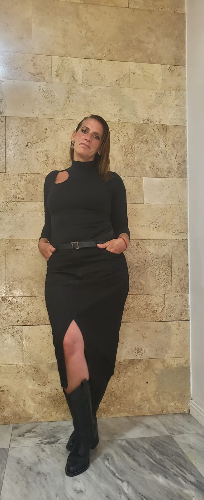

Maquillaje
En nuestra sección especializada podrás recibir las instrucciones correctas a la hora de elegir el maquillaje perfecto para la ocasión.

Transformate en tu Mejor Versión
Aquí encontrarás looks de moda y todo lo que conlleva para lucir genial.
En nuestra sección especializada podrás recibir las instrucciones correctas a la hora de elegir el maquillaje perfecto para la ocasión.
Encontrarás varios estilos para estar a la moda gracias a las recomendaciones que encontrarás en nuestra web.
Podrás encontrar diversas prendas que se adapten a tus gustos, ya sea para una situación casual o para una cena elegante por la noche.
Vamos a empezar con un estilo informal para el día a día. Este estilo consiste en una remera sencilla, unos jeans Wide Leg y zapatillas para darle un toque informal y juvenil a tu outfit.
Con un mismo pantalón podemos crear dos looks diferentes, uno de día con remera básica, zapatillas y accesorios, como una gorra, que le dan un tonque informal al outfit. Con el mismo pantalón podemos crear un look de noche agregandole accesorios y una remera con brillos.
Para esos días cálidos de verano recomendamos acompañarlo con un look relajado y casual utilizando un solero en color neutro y sandalias bajas para darle un look fresco y cómodo.
Con este outfit cualquier estilo queda bien. Es una combinación que no falla, una apuesta segura que nos hace vernos más estilizadas y elegantes. Consiste en utilizar prendas de colores negros u obscuros. Para verse más estilizada, recomendamos mostrar un poco de piernas o escote.

Para levantar un outfit podemos realizarar un make up con colores que destaquen nuestros ojos, para ello utilizamos una paleta con colores llamativos.
En este make up, la protagonista es la piel, para ello utilizaremos una base ligera pero cubritiva y un corrector para tapar las imperfecciones. Recomendamos agregar algún tipo de brillo sobre los ojos con una paleta de sombras.
La clave de este maquillaje son los ojos. Se trata de un "smokey eyes" en tonos marrones y dorados. Una base de maquillaje ligera y unos labios en colores nude.
Con esta paleta de maquillaje podrás crear un sin fin de opciones, tanto de día como de noche, combinando los colores como quieras.